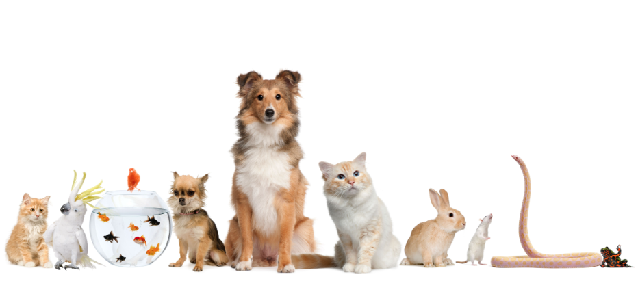

About us
Founded in 2020, Paws and Whiskers was created with a clear mission: to provide pet owners with trustworthy guidance, high‑quality resources, and a dependable community dedicated to animal wellbeing. Our platform is built on a commitment to professionalism, integrity, and a genuine passion for pets of all kinds. We strive to offer reliable information, expert insights, and practical support to help owners make informed decisions about their companions’ care. At Paws and Whiskers, we believe every pet deserves a safe, healthy, and loving environment—and we are proud to assist owners in achieving that standard every day.
Since its founding, Paws and Whiskers has continued to grow into a trusted resource for pet owners seeking clarity and confidence in their daily care routines. Our team works diligently to ensure that all content reflects current best practices and industry standards, delivering information that is both accurate and accessible. We remain dedicated to fostering a supportive environment where owners can learn, connect, and share their experiences. Through continuous improvement and a commitment to excellence, Paws and Whiskers strives to empower every pet owner with the knowledge and tools needed to provide exceptional care for their animals.
